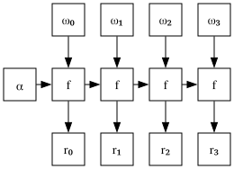
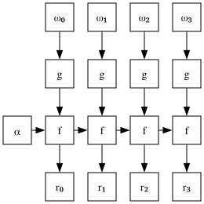
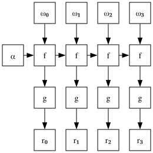
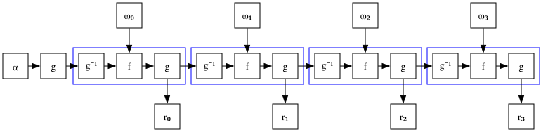

Array languages like APL are famous for using many pretty squiggles for representing built-in functions. These are called "primitives" and are different from user-defined functions, because the interpreters know about them and can do fancy optimizations with them, like recognizing special combinations [1].
APL programmers have come to rely on these optimizations, for example the
vectorization of some combinations like +/ (sum). if you were to feed your
typical APL interpreter the function {⍺+⍵}/ - which is functionally
equivalent to +/ [2] since {⍺+⍵} is
just a dfn [3] over + - the
interpreter would execute it much slower, not just because executing the
abstraction does two function calls per element (one for the dfn, one for the
primitive +) but because it does any at all.
Any respectable APL has a tight loop implemented in native code dedicated to this exact combination, which is why APL can sometimes compete with languages that compile to native code.
Scans and folds
-
foldis a higher order function generalizing the concept of iterating over an ordered collection repeatedly calling a binary function that takes as inputs an accumulator and an element of the collection, and returns a new accumulator. -
scanis the same, but instead of returning the final value of the accumulator it returns a collection of all intermediate values the accumulator took over the course of the iteration.
In both cases an initial value may or may not be provided, and in the second case the first element is treated as an initial value, and is returned unchanged, concatenated with the scan of the rest of the collection.
APL represents these functions with the operators / and \, so that
10 = +/ 1 2 3 4 1 3 6 10 = +\ 1 2 3 4
In the rest of this article, I’ll be using a fantasy dialect of APL modified to have better behaved fold and scan semantics [4] to write some functional equations. If you don’t know APL, don’t worry about it, just pretend this is the scan from any traditional functional language like Lisp, Haskell, Ocaml, etc. The main equations will also be translated to Haskell.
Algorithmic esoterica
When I say APLers rely on these, I really mean it! scans, folds, reverse scans, with the operators min, max, plus, times are all familiar, if not even routine operations for the average python programmer who is comfortable with numpy, because they really are useful.
Folding (from the right) with subtraction gives an alternating sum, that’s cute.
APL programs go beyond that. What does scanning with the less-than function do? scanning with not-equal? folding with… modulo? [5]
The issue here is that APL needs escape hatches to handle data dependencies in algorithms, both because it’s syntactically awkward to write loops and because explicitly iterating over an array in APL is mind-numbingly slow when compared to the speed at which the primitive functions run. Scans and folds are a very general way to accumulate information and "move it around" in the array, and they’re APL’s most idiomatic way to do so.
Case study: Resolving quotes
Say you have a string of text containing quote characters, and you want to tell which positions in the string are inside a pair of quotes or not: if you were to write that in C you’d do something like this:
bool in_quotes = false;
for (size_t i = 0; i < n; ++i) {
if (string[i] == '"') {
in_quotes = !in_quotes;
}
}While in APL you would write the following, where the result is an array containing the values of
in_quotes from the previous example. The idea is to scan over the boolean results from comparing
each character in the string with the " character.
in_quotes ← ≠\string='"'To see why this works, let’s make the C version branchless by encoding the if statement
into arithmetic; to make the similarity more apparent we can write != where ordinarily
^ would be more natural, on the values 0 and 1 they do the same thing.
bool in_quotes = false;
for (size_t i = 0; i < n; ++i) {
in_quotes = in_quotes != (string[i] == '"');
}Boolean scans: how many do we really need?
APL has a lot of primitives. it’s the only language I know of which has all non-trivial binary boolean functions built in: here they are, next to their truth tables.
| Common name | 00 | 01 | 10 | 11 | |
|---|---|---|---|---|---|
|
and |
0 |
0 |
0 |
1 |
|
greater than |
0 |
0 |
1 |
0 |
|
less than |
0 |
1 |
0 |
0 |
|
not equal (xor) |
0 |
1 |
1 |
0 |
|
or |
0 |
1 |
1 |
1 |
|
nor |
1 |
0 |
0 |
0 |
|
equal |
1 |
0 |
0 |
1 |
|
greater than or equal |
1 |
0 |
1 |
1 |
|
less than or equal (implication) |
1 |
1 |
0 |
1 |
|
nand |
1 |
1 |
1 |
0 |
This is an issue on an implementer’s side, because many primitives mean many combinations, and writing decent code for each of them costs in labour as well as executable size (therefore instruction cache). Moreover, what qualifies as decent code for a boolean scan is a much higher bar than the snippet I showed above: APL uses packed bit vectors to represent boolean arrays, meaning that these operations have the potential to consume tens of elements per CPU cycle, while by a quick benchmark a naive implementation would handle about 0.6 elements per cycle [6]
Telling which of these are really useful only looking at the truth tables is not trivial, and it really sucks as a user to learn that the operation that precisely solves your problem is shoddily implemented.
Is there some way that we can reduce the implementation work without sacrificing the performance?
Scan composition rules
The structure of the scan ⍺ f\ ⍵ is as follows:

Suppose we want to do some pre-processing with a function g to alter the behaviour of the scan:
what we’d end up with is a data flow of this kind:

The motivation for looking at this is that preprocessing a boolean array with a unary scalar function is just about the cheapest thing we could do, in fact there is only one non-trivial boolean unary scalar function: boolean negation. Let’s keep this observation aside for now, and ask ourselves: is this operation still a scan? If so, what function operand should scan take to produce this result?
It’s apparent that the right argument to f is being fed through g at each step in the
iteration, so the answer is {⍺ f (g ⍵)}, which brings us to the simple equation
⍺ f\ g¨ ⍵ ←→ ⍺ (f∘g)\ ⍵Equivalent Haskell
scanl f x (map g ys) = scanl (\x y -> f x (g y)) x ysIf g is any function, where ∘ is APL’s composition operator "jot" that satisfies
⍺ f∘g ⍵ ←→ ⍺ f (g ⍵)It’s a little trickier to see what effect post-processing with g would have:

It may look exactly like before, but notice that the input to each subsequent f call
is not the same as the value that is sent to the output array, so this is not a scan!
To fix this, let’s assume that g has a left inverse g-1 and insert it in between each pair of calls:

This is a scan diagram using the function {g ((g⍣¯1) ⍺) f ⍵}, except the initial value x has been preprocessed with g.
this gives the equation:
g¨ ⍺ f\ ⍵ ←→ (g ⍺) (g⍤(g⍣¯1⍛f))\ ⍵Equivalent Haskell
map g (scanl f x ys) = scanl (\x y -> g (f (ig x) y)) (g x) ysAgain some composition operators have been used:
(g⍣¯1) g ⍵ ←→ ⍵ ⍝ APL can sometimes find inverses by itself!
⍺ (g⍤f) ⍵ ←→ g (⍺ f ⍵)
⍺ (g⍛f) ⍵ ←→ (g ⍺) f ⍵And finally we can put these two relations together to find a third.
g ⍺ f\ g ⍵ ←→ (g ⍺) g⍤(g⍣¯1⍛f∘g)\ ⍵Equivalent Haskell
map g (scanl f x (map g ys)) = scanl (\x y -> g (f (ig x) (g y))) (g x) ysTruth table shuffles
In particular, we are interested in seeing which pairs of primitives are
related by one of these three relations, where g is the negation function ~.
We start with the truth tables of our primitives and analyze how they change under the
transformations described above.
We represent all of the truth tables at once as the array a with shape 10 2 2
a ┌┌→──┐ ↓↓0 0│ ││0 1│ ││ │ ││0 0│ ││1 0│ ││ │ ││0 1│ ││0 0│ ││ │ ││0 1│ ││1 0│ ││ │ ││0 1│ ││1 1│ ││ │ ││1 0│ ││0 0│ ││ │ ││1 0│ ││0 1│ ││ │ ││1 0│ ││1 1│ ││ │ ││1 1│ ││0 1│ ││ │ ││1 1│ ││1 0│ └└~──┘
Composing on the right argument with ~ is the same as reversing the last axis with
the ⌽ function:
pre ← ⌽[2] aNegating the output is just a matter of negating each entry of the table; if we do this, we must also negate the left argument, which we do by reversing the first axis of each truth table (the middle axis here).
post ← ~ ⌽[1] aAnd of course we can do both transformations at once
both ← ~ ⌽[1] ⌽[2] aNow we can find out who’s related to whom by searching for the truth tables we got in the original array:
index ← ↑(⊂a)⍳¨a pre post both┌→──────────────────┐ ↓0 1 2 3 4 5 6 7 8 9│ │1 0 5 6 7 2 3 4 9 8│ │7 4 9 3 1 8 6 0 5 2│ │4 7 8 6 0 9 3 1 2 5│ └~──────────────────┘
Now that we know this, we can index into the list of the symbols the truth tables referred to:
'∧><≠∨⍱=≥≤⍲'[index]┌→─────────┐ ↓∧><≠∨⍱=≥≤⍲│ │>∧⍱=≥<≠∨⍲≤│ │≥∨⍲≠>≤=∧⍱<│ │∨≥≤=∧⍲≠><⍱│ └──────────┘
Now, how do we interpret this? along the top row are the
original symbols; the second row are the symbols that
are related to the top row by the first scan equation we derived
above, i.e. ⍺ p\ ~⍵ ←→ ⍺ q\ ⍵.
The third and fourth row, similarly, are related to the first
via ~ (~⍺) p\ ⍵ ←→ ⍺ q\ ⍵ and ~ (~⍺) p\ ~⍵ ←→ ⍺ q\ ⍵
Conclusion
We can see that the set ∧, <, ≠ covers all columns at
least once, therefore if we provide fast implementations of each of
these, we can derive decent implementations of the others by just
applying these symmetries. This cuts down on implementation time
and executable size, without completely sacrificing performance.
None of this is completely new, by the way. The trick ⍺ ≠\ ⍵ ←→ ⍺ =\ ~⍵
is well known among K programmers, since K doesn’t have a builtin
not-equal operator. In the same vein, many of these shortcuts
are employed in the CBQN interpreter for BQN for the
less common
combinations.
Appendix A. Brainstorming and observations
I originally discussed this on the APL farm discord server, where some of the users made interesting comments:
Truth tables as finite state machines
In the K language, the form x f\ y, is equivalent to the x a\ y form, where
a is a matrix containing the values of f on pairs of non-negative integers.
This form advances the state machine
[7]
with transitions defined in a over the sequence y. In this interpretation, the concrete
transformations we applied to the truth tables take the place of the
composition operators in the original equations we defined.
( x a\ ~y) = x ( |'a)\ y
(~ x a\ y) = (~x) (~| a)\ y
(~ x a\ ~y) = (~x) (~||'a)\ yEquivalent Haskell
runFsm a x ys = scan (\x y -> (a !! x) !! y) x ys
runFsm a x $ map (1 -) ys = runFsm x ( map reverse a) ys
map (1 -) $ runFsm a x ys = runFsm (1 - x) (map (map (1 -)) $ reverse a) ys
map (1 -) $ runFsm a x $ map (1 -) ys = runFsm (1 - x) (map (map (1 -)) $ map reverse $ reverse a) ysInvariants under the given transformations
The transformations we gave permute the rows or columns of the tables
and/or negate the entries. This implies that the number of ones in the tables either remains
equal to 2 or flip-flops between 1 and 3 [8]. Moreover, since the transformations commute and are self-inverses,
our relation is an equivalence relation; we deduce that = and ≠ are in a class of their
own, with one transformation fixing both operations, and the others fill at least two more.
On these, the transformation ~⌽[0]a can be applied so that there are 3 0s,
then ⌽[1]a can be applied to ensure that the single 1 entry occurs on the second column.
The only two possibilities are distinguished by whether the 1 value is at
a[1;1] (which gives ∧) or at a[0;1] (which gives <)
Appendix B. Efficient implementation of boolean scans
Xor
A xor scan on a machine word can be implemented efficiently in a few instructions by a typical prefix doubling technique, similar to the one described by Bit Twiddling Hacks
uint64_t xorscan_word (uint64_t word) {
word ^= word << 1;
word ^= word << 2;
word ^= word << 4;
word ^= word << 8;
word ^= word << 16;
word ^= word << 32;
return word;
}We only need to handle the carry from the previous word. The typical way to do this would be
to xor it with the first bit in word, but this is actually sub-optimal: notice that carry
is needed at the very start of each iteration and only updated at the very end, which ties all iterations
in a very long dependency chain.
void xorscan_bad (bool initial, uint64_t *words, size_t n) {
uint64_t carry = (uint64_t)initial;
for (size_t i = 0; i < n; ++i) {
uint64_t word = xorscan_word(words[i] ^ carry);
carry = word >> 63;
words[i] = word;
}
}This compiles to the following core loop, which runs at around 3-4 bits per cycle. (all the timings I’ll give are for memory that is hot in cache, otherwise memory latency would dominate runtime)
Assembly output
.loop:
xor (%rdx),%rdi
add $0x8,%rdx
lea (%rdi,%rdi,1),%rax
xor %rdi,%rax
lea 0x0(,%rax,4),%rcx
xor %rcx,%rax
mov %rax,%rcx
shl $0x4,%rcx
xor %rcx,%rax
mov %rax,%rcx
shl $0x8,%rcx
xor %rcx,%rax
mov %rax,%rcx
shl $0x10,%rcx
xor %rcx,%rax
mov %rax,%rcx
shl $0x20,%rcx
xor %rcx,%rax
mov %rax,%rdi
mov %rax,-0x8(%rdx)
shr $0x3f,%rdi
cmp %rdx,%rsi
jne .loopOn a CPU with super-scalar execution, it would be nice if we could delay the usage of the previous result until
the latest possible time.
Fortunately xor is associative, so we can just broadcast the carry bit to every position in the final result: now
the CPU is free to start executing xorscan_word for the next iteration before the result of the previous one is ready.
void xorscan_good (bool initial, uint64_t *words, size_t n) {
uint64_t carry = - (uint64_t)initial;
for (size_t i = 0; i < n; ++i) {
uint64_t word = carry ^ xorscan_word(words[i]);
carry = - (word >> 63);
words[i] = word;
}
}This is much faster, processing up to 10.5 bits per cycle.
Assembly output
.loop:
mov (%rcx),%rdx
add $0x8,%rcx
lea (%rdx,%rdx,1),%rax
xor %rdx,%rax
lea 0x0(,%rax,4),%rdx
xor %rdx,%rax
mov %rax,%rdx
shl $0x4,%rdx
xor %rdx,%rax
mov %rax,%rdx
shl $0x8,%rdx
xor %rdx,%rax
mov %rax,%rdx
shl $0x10,%rdx
xor %rdx,%rax
mov %rax,%rdx
shl $0x20,%rdx
xor %rdx,%rax
xor %rsi,%rax
mov %rax,%rsi
mov %rax,-0x8(%rcx)
sar $0x3f,%rsi
cmp %rcx,%rdi
jne .loopIf the CPU supports a carry-less multiply instruction (many modern CPUs do!) then xorscan_word can be implemented as carry-less multiplication with the word 0xffffffffffffffff (all ones).
And
All of the above (except for the carry-less multiply) can be applied verbatim, by replacing ^ with &; however there is a faster
method available.
Firstly, a single-word and scan can be implemented much more simply than xor [9].
uint64_t andscan_word (uint64_t word) {
return word & ~(word + 1);
}This works because adding one turns the first run of ones into a run of zeros, then the negation turns the initial run of zeros back into a run of ones, as well as negating everything else. The final bitwise and sees two matching runs of ones, a matching pair of zero bits, and mismatched bits everywhere else.
Here is an example, with the bits ordered from least to most significant.
|
|
|
|
|
|
|
|
To extend this to work on an array of words, we observe that at most one word will need an actual scan, because everything before it is known to be all ones already, and everything after it can be unconditionally set to zero.
The full implementation might be something like the following.
void andscan (bool initial, uint64_t *words, size_t n) {
size_t i = 0;
if (initial) {
for (; i < n; ++i) {
uint64_t word = words[i];
if (~word) {
words[i] = andscan_word(word);
++i;
break;
}
}
}
for (; i < n; ++i) {
words[i] = 0;
}
}This produces two separate loops, the first and most intensive of them can do 62 bits per cycle, while the other gets compiled into a call to memset.
Assembly output
.loop:
add $0x8,%rcx
cmp %rax,%rdx
je .found
mov (%rcx),%rsi
inc %rax
cmp $0xffffffffffffffff,%rsi
je .loop
Less-than
This is the most complicated case, and the solution I’ll present comes from the
simdjson
library, which uses it to find escaped characters. In fact, the intuition behind
what <\ does is that it turns off every 1 bit that is at an odd offset in
a contiguous sequence of 1s, which is exactly what you need to figure out
which backslashes in a string work as escapes and which are escaped.
uint64_t ltscan_word (uint64_t word) {
uint64_t guard = word << 1 | 0xaaaaaaaaaaaaaaaa;
uint64_t parity = guard - word;
return (parity ^ 0xaaaaaaaaaaaaaaaa) & word;
}Here is an example, again in little endian bit order.
|
|
|
|
|
|
|
|
|
|
|
|
Shifting and setting the odd bits controls whether or not a borrow chain is
initiated in the subtraction: the start of a run of 1s is set to 0 if it
is at an even position, otherwise it stays 1. The last element of a run is
also moved past the end to stop the borrow chain. Then subtracting the original
bit mask creates a chain of borrows which leaves every bit set in the first
case, and just leaves every bit unset in the second case. If we now flip every
odd bit, we will have the even bits set in the runs that start at even
positions, the odd bits set in the runs that start at odd positions, and
some garbage outside of these runs which we clean up with bitwise and.
Like the xor case, the trivial way to chain these together is to clear the first bit whenever the last bit of the previous result is set, though Marshall’s notes on this also mention a smarter way to reduce the length of the critical path.
void ltscan (bool init, uint64_t *words, size_t n) {
uint64_t carry = (uint64_t)init;
for (size_t i = 0; i < n; ++i) {
uint64_t word = ltscan_word(words[i] &~ carry);
carry = word >> 63;
words[i] = word;
}
}This particular version can do 8.8 bits per cycle.
Assembly output
.loop:
andn (%rsi),%rdi,%rdi
add $0x8,%rsi
lea (%rdi,%rdi,1),%rax
or %rdx,%rax
sub %rdi,%rax
xor %rdx,%rax
and %rdi,%rax
mov %rax,%rdi
mov %rax,-0x8(%rsi)
shr $0x3f,%rdi
cmp %rsi,%rcx
jne .loop